建筑是人类最为古老的艺术形式, 因而在西方有着”第一艺术的美誉”
古代建筑
建筑材料
古代的建筑材料都是直接来自自然

石头密度高, 寿命长, 但施工周期长.
所以西方的经典建筑往往施工周期长达十几上百年, 而落成之后可以经受千百年的风吹日晒. 比如帕特农神庙, 已建成两千四百多年.
帕特农神庙
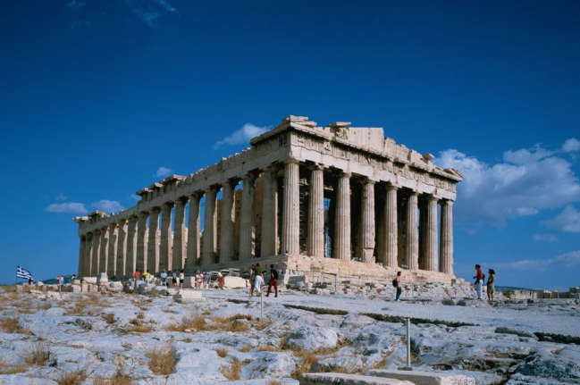
帕特农神庙背面的人形柱
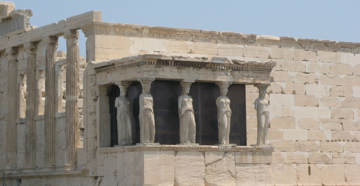
木头密度小, 寿命和施工周期与石头相反.
凡来之不易, 愈显珍贵, 得来轻易, 消失的也容易. (阿房宫)
中国可以考证的最老建筑是山西五台山佛光寺(中晚唐)
另外木头容易制造较大跨度的窗框和飞檐, 但不容易造出高层房屋. 而石头可以承受较大的压力, 所以西方建筑普遍占地面积小于中国建筑, 但建筑高度要高很多
西方石制建筑
在西方经典的建筑都不是用来给人居住生活使用的, 而是神灵栖居的地方(宗教需求)
- 石制建筑不利于采光而拔高, 可以满足宗教建筑的神秘幽暗和高耸入云的要求
- 石制建筑建造不易但耐用易存的特点可以满足宗教建筑不求急用, 唯求永恒的理念
雨果笔下的巴黎圣母院
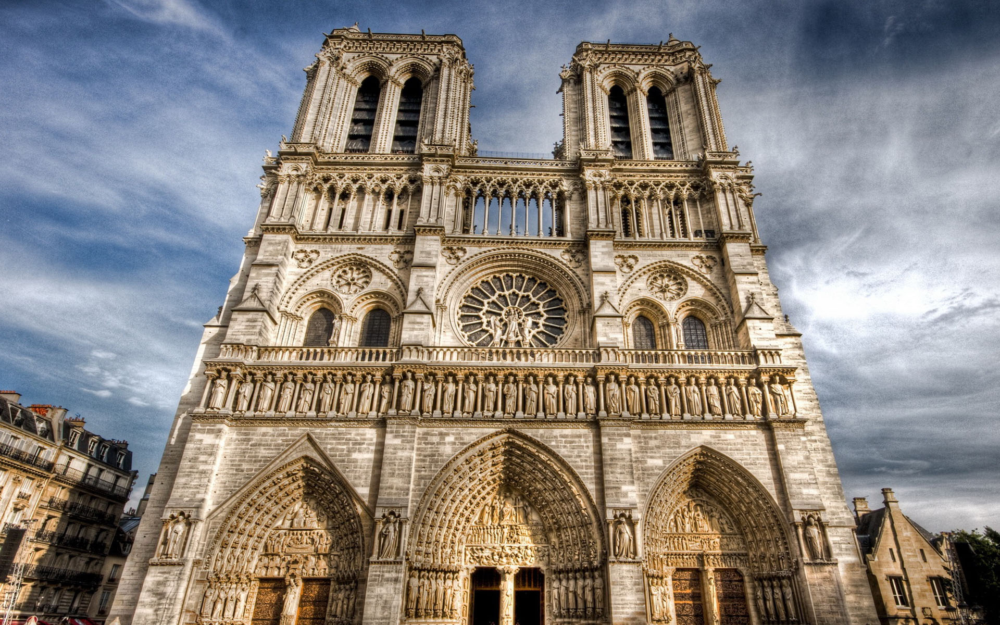
巴黎圣母院的内饰, 充满了神秘的宗教气息
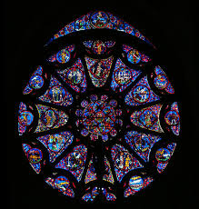
中国木制建筑
不像古代西方的宗教文化, 古代中国人建房的目的则更多是为了给人(帝王)居住, 中国不是没有宗教, 只是偏重儒家(世俗)文化(至于佛塔是西域随佛教引入的)
- 木制建筑不利于高耸而有利于采光的特点可以满足世俗建筑宽敞明亮的要求
- 木制建筑建造方便, 刚好能满足世俗建筑速成的现实需要
在建筑方面, 西方是世俗模仿宗教(天鹅古堡), 而中国是宗教模仿世俗
西方建筑的基本元素
因为西方的建筑都是纵向发展的, 所以柱子就是非常重要的东西. 西方的柱子都是从古希腊的四种柱子演变而来的
- 多利克石柱, 比如帕特农神庙里的柱子. 这中柱子是根据男性的腿长和脚的比例来制造, 并且柱身上有一些凹槽, 像男子汉的阳刚之气(神是完美的, 而人是神造的近乎完美的作品)
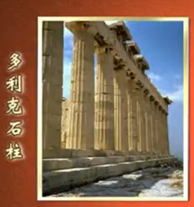
- 爱奥尼石柱, 和多利克类似, 但它是根据女性来制造的, 并且柱身比较光滑, 柱头类似女性卷发, 整体上有一种女性的柔美
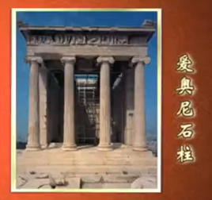
- 科林斯石柱, 柱身像多利克, 挺拔有力, 而柱头在爱奥尼的基础上, 像散落的花瓣, 结合了男性和女性的特点
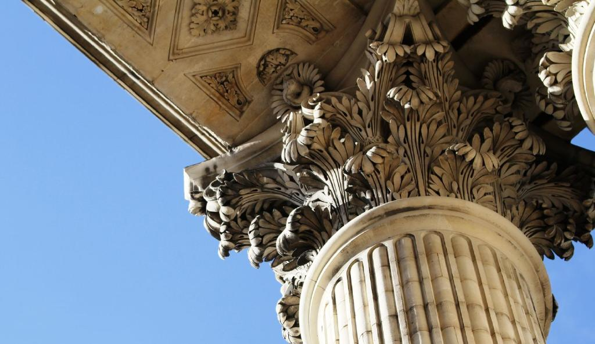
- 人形柱
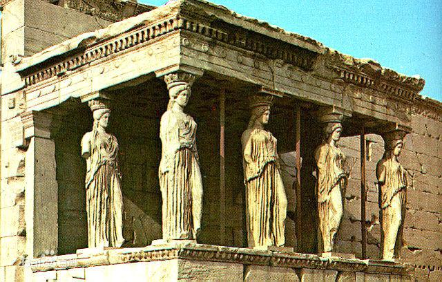
西方建筑的主要类型
大体可以通过建筑的屋顶来判断
- 希腊式: 像帕特农神庙那样的简单人字形斜坡. 包括欧洲现代建筑也有这种设计, 比如塞纳河旁的市政厅
意大利罗马的万神庙, 前半部分是典型的希腊式, 而后半部分则是圆柱圆顶的, 并且中间有一个用于采光的洞.
万神庙
万神庙内部
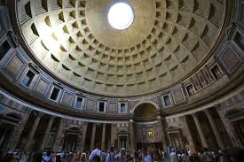
万神庙衍生了以下两种屋顶风格: (罗马分裂后的天主教和东正教)
- 基于希腊式的罗马式, 但不像希腊式那样柱体之间是空的, 而是封闭的结构, 寓意人与神的隔绝和疏远. 同时它还有单顶, 双顶的变体
- 基于圆柱圆顶的拜占庭式, 同样以封闭结构和高耸姿态表拜占庭式现出人与神的隔绝和疏远, 清真寺的建筑与之类似
两者的建筑重心分别在 梵蒂冈 和 君士坦丁堡
- 哥特式, 到了中世纪以后, 人神关系更加紧张, 禁欲主义越来越强, 出现了哥特式建筑, 典型代表就是德国科隆, 以及科隆大教堂, 还有雨果笔下的巴黎圣母院(不过不是尖顶的)
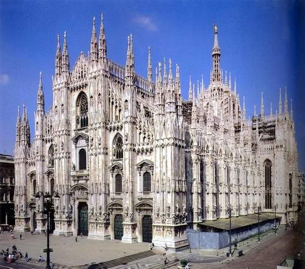
- 文艺复兴式, 中世纪后期文艺复兴时期出现. 典型代表就是意大利弗洛伦萨的花之圣母大教堂和圣彼得大教堂. 圆顶+采光, 使其内部比较明亮柔和
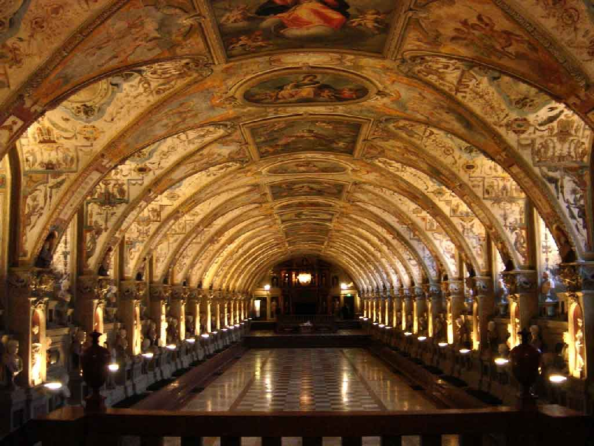
- 巴洛克式, 随着人神关系的改善, 建筑就越来越人性化艺术化, 进一步出现了巴洛克式. 它实际上是在圆顶的基础上做了些涡卷的修饰, 并在罗马式基础上把直角的部分都改造成了涡卷的波浪的形状, 显得更为柔和
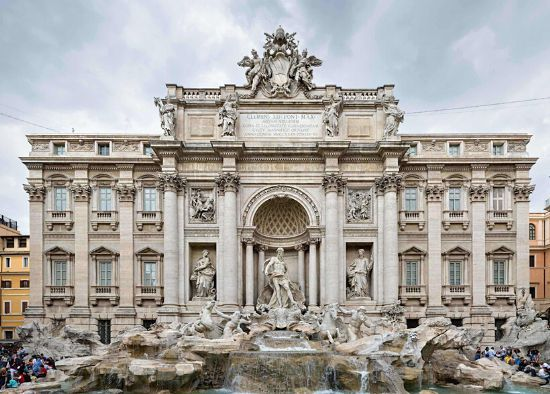
哥特式是一种崇高, 文艺复兴是一种壮美, 而巴洛克式则是一种优雅. 但不管是哪一时期, 哪种具体的建筑风格, 它所反映的都是当时的人神关系.
西方的园林
如果说上面的建筑风格反映人神关系, 那西方园林反映的是人和自然的关系
- 台地式园林: 基于意大利周边的丘陵地带, 很有层次感, 像有点像云南的梯田的味道, 但是西方人的园林是 严格的几何对称的
- 古典式园林: 以法国凡尔赛宫(路易十四的下宫)为代表, 也是严格的几何图形, 不过它是在平面上的
- 英国式园林: 模仿中国园林, 并不代表欧洲文化
其中对称性所体现的是人对自然的主宰和驾驭
所以欧洲建筑无外乎两大主题: 宗教性建筑 和 园林建筑
中国建筑
中国建筑因为是基于木头的, 所以都是横向展开, 特别是中国建筑独有的斗拱. 斗拱, 由斗形的木块和肘形的木块衔接叠加得到的, 它的作用在于把建筑纵向的压力横向传递, 使得屋檐可以向外拓展(飞檐) 中国建筑体现的是人与人的关系, 不同的建筑风格反映的是人的社会地位和官位
- 庑殿式(最高等级)
- 歇山式
- 悬山式
- 硬山式
- 重檐
- 单檐
后现代建筑
追求的是与众不同, 追求别出心裁的设计, 不会过多的考虑方便施工以及材料的节省(现代建筑)
CCTV新楼打破了传统工业建筑的平衡感, 把规则的几何编程了不规则的几何体.
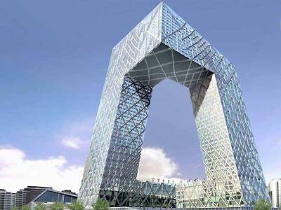
凡尔赛宫入口, 由华裔设计师贝津铭所设计
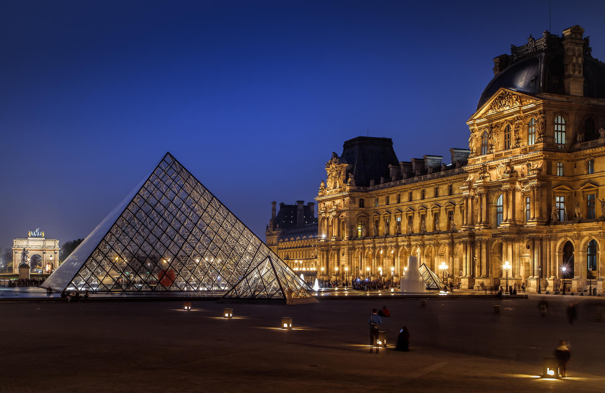
上大下小的中国馆